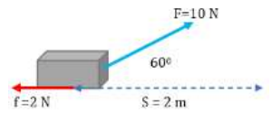

Kunci Jawaban
-
Diketahui :
\(m = 25\) kg
\(F = 10\) N, condong membentuk sudut 60°
Gesekan \((f) = 2\) N
perpindahan \((s) = 2\) m
Ditanya : Usaha \((W) = ?\)
Jawaban : Visualisasi soal adalah sebagai berikut.

Usaha oleh resultan gaya :
$$W = \sum F\cdot s = (F\cos60^\circ - f)\cdot 2$$
$$W = (10\times0,5-2)\cdot2 = 6\text{ joule}$$
-
Diketahui :
Massa mobil \((m) = 1\) ton \(= 1000\) kg
Kecepatan awal \((v_0) = 0\), mogok
Gaya \((F) = 250\) N
Waktu \((t) = 20\) detik
Ditanya : Usaha \((W) = ?\)
Jawaban :
$$W = F\cdot s$$
Gaya dianggap sejajar dengan perpindahan, sudutnya 0
$$s = v_0t + \frac12 at^2$$
$$s = 0 + \frac12\cdot\frac{F}{m}\cdot20^2$$
$$s = \frac12\cdot\frac{250}{1000}\cdot400$$
$$s = 50\text{ m}$$
Sehingga \(W=250\times50=12500\text{ joule}\)
-
Diketahui :
Massa truk \((m) = 4\) ton \(= 4000\) kg
Kecepatan awal \((v_0)= 54\) km/jam \(= 15\) m/s
Kecepatan akhir \((v_t)= 0\), berhenti
Jarak \((s) = 50\) m
Ditanya : Usaha \((W)\) dan gaya rem \((F) = ?\)
Jawaban :
$$W = \frac12m\left(v_t^2-v_0^2\right)$$
$$W = \frac12\cdot4000(0-15^2)$$
$$W = 2000(-225) = -450000\text{ joule}$$
$$F = \frac{W}{s} = \frac{-450000}{50} = -9000\text{ N}$$
∧